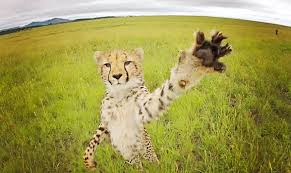

Carl
The Cheetah
This is "Carl", the Cheetah! He's spent most of his life chasing down preditors in the great saharrah, but now he's looking for someplace to settle down; he's ready to sink his teeth into a life of pethood. If you like the idea of never being able to outrun your deadly pet, then Carl is the pet for you!
Bonus: Carl WILL catch any burglers..
Pam
The Parrot

Pam here is quite the loud mouth. If you say it, she'll repeat it. A former copy machine for the FLinston's, she's ready to retire into a less taxing work-position. If you want to hear what all your friends and family said while your were gone, look no further! Her beak is the beak of truth. (As a side note, if she won't stop talking try saying "silence"- maybe she'll repeat that?)
Bonus: Pam won't let you forget
Marcus
The Monkey
Marcus.. Well, here's the thing with Marcus: he's pretty much the easiest pet to own. All the guy seems to do is chill. If your looking for a fun entertaining pet, Marcus is nit the pet for you. However, if you're looking for a buddy to chill on the couch with, this is your partner in crime. Just be sure you keep your pantry stock full of bananas.
Bonus: Marcus will eat all the bugs out of your hair
Al
The Alligator
Al here likes to smile. All the time... He's a great friend to share selfies with (just don't get too close). If you want to ride an animal to work, how about Al? Everyone can ride a horse- but if you adopt Al, you can ride an alligator to work! I mean common, what's cooler than that?
Bonus: He cuddle's well.